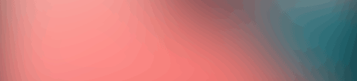

ICLC ZAL 2021
Evoluciones Convergentes / Convergent Evolutions
International Conference on Live Coding 2021Valdivia, ChileZAL
15-17 Diciembre | 2021 / December 15-17 | 2021
ZAL is for the IATA Code for Valdivia City The conference will be hosted online – Soon details on the virtual presentation format
2021 Call > Papers / Music-AV performances / Installations
The International Conference on Live Coding, ICLC 2021 invites submissions of papers, music/audiovisual performances and installations. Our conference theme this year is Convergent Evolutions and will be distributed within three subtopics: Code & Semantics, Visuality, and Social & Anthropologic.
> Code & Semantics
Research projects, works, practices addressing the use, dissemination and creation of live coding languages and idiosyncratic semantic structures.
> Visuality
Live coding and algorithmic tools for and artistic approaches to visuality in a broader sense.
> Social & Anthropologic
Social and human focused topics regarding live coding and computer music, including gender, decolonial, political, educational themes among others.
We encourage submission of papers related to these themes, but there is no limitation to submissions covering related areas such as:
- Aesthetics of live coding and computer music
- Algorithmic composition
- Analytical tools for music, visuals and other forms of digital art
- Artificial intelligence [machine learning, deep learning, neural networks]
- Languages for live coding and computer music
- Live coding without computers
- Live cinema
- History and alternative histories of computer music and live coding
- Immersive realities [audio, visuals, augmented reality]
- Interdisciplinary approaches
- Perception and psychology of live coding
- Studio Reports / Works logs
Instructions/Rules
We encourage submission of papers related to these themes, but there is no limitation to submissions covering related areas such as:
- This call is open to any researcher regardless of nationality, gender, age or career stage.
- Papers format: link with template soon here.
- Works format: live coding performances (AV files), video records of performances involving people or physical actions, algorithmic AV works in video format. More details soon.
- Installations format: details soon
- All submissions must be submitted as a PDF file and situable links through the Conference Management Toolkit (CMT): Link and details soon
- There are no submission fees.
- Submissions can be either in Spanish or English.
- Registration system soon.
- Submissions dealine: 4th September 2021. More details soon.
CMT Submission site: https://cmt3.research.microsoft.com/ICLC2021/